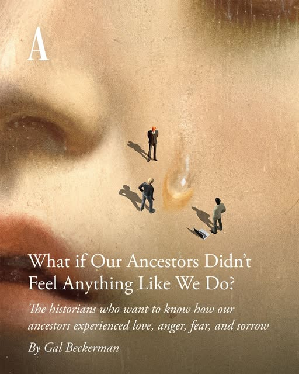

When we know to look for it, we can see that smiling and laughing is part of a linguistically "missing" emotion.
We can see this in a social media post about an article by The Atlantic:
Image:What if our ancestors didn't feel anything like we do? The historians who want to know how our ancestors experienced love, anger, fear, and sorrow.

Notice the emotions chosen for the subtitle: love, anger, fear, and sorrow. Where is the emotion that includes smiling and laughing? This is the "missing" or "nameless" emotion.
Some books use an intense words for this emotion, like joy. Others use problematic words, like happiness. In this book, we use "humor" as a more inclusive, blank-slate term.
The article also gets to humor blindness: our tendency to ignore or downplay smiling and laughing. When we interact with people or things we love, we almost always smile and laugh. Even so, this isn't usually something we think about when we hear the word "love."
We can also start to notice where the distinction between humor (joke) and humor (emotion) starts to force itself in the language. Below, a user on the gaming storefront Steam reviews the game Dispatch:
Game Reviewer:For a game where there's a joke every other sentence i laughed maybe 4 times and air escaped my nose maybe 8. Very low joke to laugh ratio.
The user contrasts the presence of humor (joke) with the absence of humor (emotion)—a "low joke to laugh ratio."
This is a fairly cumbersome way to describe this—although we often have no other choice if we don't have a good name for experiences of smiling and laughing! ("I didn't feel much humor playing this game.")